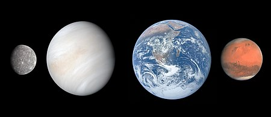

The Solar System[c] is the gravitationally bound system of the Sun and the objects that orbit it. It formed 4.6 billion years ago from the gravitational collapse of a giant interstellar molecular cloud. The vast majority (99.86%) of the system's mass is in the Sun, with most of the remaining mass contained in the planet Jupiter. The four inner system planets—Mercury, Venus, Earth and Mars—are terrestrial planets, being composed primarily of rock and metal. The four giant planets of the outer system are substantially larger and more massive than the terrestrials. The two largest, Jupiter and Saturn, are gas giants, being composed mainly of hydrogen and helium; the next two, Uranus and Neptune, are ice giants, being composed mostly of volatile substances with relatively high melting points compared with hydrogen and helium, such as water, ammonia, and methane. All eight planets have nearly circular orbits that lie near the plane of Earth's orbit, called the ecliptic.
There are an unknown number of smaller dwarf planets and innumerable small Solar System bodies orbiting the Sun.[d] Six of the major planets, the six largest possible dwarf planets, and many of the smaller bodies are orbited by natural satellites, commonly called "moons" after Earth's Moon. Two natural satellites, Jupiter's moon Ganymede and Saturn's moon Titan, are larger but not more massive than Mercury, the smallest terrestrial planet, and Jupiter's moon Callisto is nearly as large. Each of the giant planets and some smaller bodies are encircled by planetary rings of ice, dust and moonlets. The asteroid belt, which lies between the orbits of Mars and Jupiter, contains objects composed of rock, metal and ice. Beyond Neptune's orbit lie the Kuiper belt and scattered disc, which are populations of objects composed mostly of ice and rock.
In the outer reaches of the Solar System lies a class of minor planets called detached objects. There is considerable debate as to how many such objects there will prove to be.[9] Some of these objects are large enough to have rounded under their own gravity and thus to be categorized as dwarf planets. Astronomers generally accept about nine objects as dwarf planets: the asteroid Ceres, the Kuiper-belt objects Pluto, Orcus, Haumea, Quaoar and Makemake, the scattered-disk objects Gonggong and Eris, and Sedna.[d] Various small-body populations, including comets, centaurs and interplanetary dust clouds, freely travel between the regions of the Solar System.
The solar wind, a stream of charged particles flowing outwards from the Sun, creates a bubble-like region of interplanetary medium in the interstellar medium known as the heliosphere. The heliopause is the point at which pressure from the solar wind is equal to the opposing pressure of the interstellar medium; it extends out to the edge of the scattered disc. The Oort cloud, which is thought to be the source for long-period comets, may also exist at a distance roughly a thousand times further than the heliosphere. The Solar System is located 26,000 light-years from the center of the Milky Way galaxy in the Orion Arm, which contains most of the visible stars in the night sky. The nearest stars are within the so-called Local Bubble, with the closest, Proxima Centauri, at 4.2441 light-years.
The word solar means "pertaining to the Sun", which is derived from the Latin word sol, meaning Sun. The Sun is the dominant gravitational member of the Solar System, and its planetary system is maintained in a relatively stable, slowly evolving state by following isolated, gravitationally bound orbits around the Sun.
The planets and other large objects in orbit around the Sun lie near the plane of Earth's orbit, known as the ecliptic. Smaller icy objects such as comets frequently orbit at significantly greater angles to this plane. Most of the planets in the Solar System have secondary systems of their own, being orbited by natural satellites called moons. Many of the largest natural satellites are in synchronous rotation, with one face permanently turned toward their parent. The four giant planets have planetary rings, thin bands of tiny particles that orbit them in unison.
As a result of the formation of the Solar System, planets and most other objects orbit the Sun in the same direction that the Sun is rotating. That is, counter-clockwise, as viewed from above Earth's north pole. There are exceptions, such as Halley's Comet. Most of the larger moons orbit their planets in prograde direction, matching the planetary rotation; Neptune's moon Triton is the largest to orbit in the opposite, retrograde manner. Most larger objects rotate around their own axes in the prograde direction relative to their orbit, though the rotation of Venus is retrograde.
To a good first approximation, Kepler's laws of planetary motion describe the orbits of objects about the Sun. These laws stipulate that each object travels along an ellipse with the Sun at one focus, which causes the body's distance from the Sun to vary over the course of its year. A body's closest approach to the Sun is called its perihelion, whereas its most distant point from the Sun is called its aphelion. The orbits of the planets are nearly circular, but many comets, asteroids, and Kuiper belt objects follow highly elliptical orbits. Kepler's laws only account for the influence of the Sun's gravity upon an orbiting body, not the gravitational pulls of different bodies upon each other. On a human time scale, these additional perturbations can be accounted for using numerical models, but the planetary system can change chaotically over billions of years.
The angular momentum of the Solar System is a measure of the total amount of orbital and rotational momentum possessed by all its moving components. Although the Sun dominates the system by mass, it accounts for only about 2% of the angular momentum. The planets, dominated by Jupiter, account for most of the rest of the angular momentum due to the combination of their mass, orbit, and distance from the Sun, with a possibly significant contribution from comets.
The overall structure of the charted regions of the Solar System consists of the Sun, four smaller inner planets surrounded by a belt of mostly rocky asteroids, and four giant planets surrounded by the Kuiper belt of mostly icy objects. Astronomers sometimes informally divide this structure into separate regions. The inner Solar System includes the four terrestrial planets and the asteroid belt. The outer Solar System is beyond the asteroids, including the four giant planets. Since the discovery of the Kuiper belt, the outermost parts of the Solar System are considered a distinct region consisting of the objects beyond Neptune.
The principal component of the Solar System is the Sun, a low-mass star that contains 99.86% of the system's known mass and dominates it gravitationally. The Sun's four largest orbiting bodies, the giant planets, account for 99% of the remaining mass, with Jupiter and Saturn together comprising more than 90%. The remaining objects of the Solar System (including the four terrestrial planets, the dwarf planets, moons, asteroids, and comets) together comprise less than 0.002% of the Solar System's total mass.
The Sun is composed of roughly 98% hydrogen and helium, as are Jupiter and Saturn. A composition gradient exists in the Solar System, created by heat and light pressure from the early Sun; those objects closer to the Sun, which are more affected by heat and light pressure, are composed of elements with high melting points. Objects farther from the Sun are composed largely of materials with lower melting points. The boundary in the Solar System beyond which those volatile substances could coalesce is known as the frost line, and it lies at roughly five times the Earth's distance from the Sun.
The objects of the inner Solar System are composed mostly of rocky materials, such as silicates, iron or nickel. Jupiter and Saturn are composed mainly of gases with extremely low melting points and high vapour pressure, such as hydrogen, helium, and neon. Ices, like water, methane, ammonia, hydrogen sulfide, and carbon dioxide, have melting points up to a few hundred kelvins. They can be found as ices, liquids, or gases in various places in the Solar System.[36] Icy substances comprise the majority of the satellites of the giant planets, as well as most of Uranus and Neptune (the so-called "ice giants") and the numerous small objects that lie beyond Neptune's orbit. Together, gases and ices are referred to as volatiles.
The Sun is the Solar System's star and by far its most massive component. Its large mass (332,900 Earth masses), which comprises 99.86% of all the mass in the Solar System, produces temperatures and densities in its core high enough to sustain nuclear fusion of hydrogen into helium. This releases an enormous amount of energy, mostly radiated into space as electromagnetic radiation peaking in visible light.
Because the Sun fuses hydrogen into helium at its core, it is a main-sequence star. More specifically, it is a G2-type main-sequence star, where the type designation refers to its effective temperature. Hotter main-sequence stars are more luminous. The Sun's temperature is intermediate between that of the hottest stars and that of the coolest stars. Stars brighter and hotter than the Sun are rare, whereas substantially dimmer and cooler stars, known as red dwarfs, make up about 75% of the stars in the Milky Way.
The Sun is a population I star; it has a higher abundance of elements heavier than hydrogen and helium ("metals" in astronomical parlance) than the older population II stars. Elements heavier than hydrogen and helium were formed in the cores of ancient and exploding stars, so the first generation of stars had to die before the universe could be enriched with these atoms. The oldest stars contain few metals, whereas stars born later have more. This higher metallicity is thought to have been crucial to the Sun's development of a planetary system because the planets form from the accretion of "metals".
The inner Solar System is the region comprising the terrestrial planets and the asteroid belt. Composed mainly of silicates and metals, the objects of the inner Solar System are relatively close to the Sun; the radius of this entire region is less than the distance between the orbits of Jupiter and Saturn. This region is also within the frost line, which is a little less than 5 AU (750 million km; 460 million mi) from the Sun.
The four terrestrial or inner planets have dense, rocky compositions, few or no moons, and no ring systems. They are composed largely of refractory minerals such as the silicates—which form their crusts and mantles—and metals such as iron and nickel which form their cores. Three of the four inner planets (Venus, Earth and Mars) have atmospheres substantial enough to generate weather; all have impact craters and tectonic surface features, such as rift valleys and volcanoes. The term inner planet should not be confused with inferior planet, which designates those planets that are closer to the Sun than Earth is (i.e. Mercury and Venus).
The outer region of the Solar System is home to the giant planets and their large moons. The centaurs and many short-period comets also orbit in this region. Due to their greater distance from the Sun, the solid objects in the outer Solar System contain a higher proportion of volatiles, such as water, ammonia, and methane than those of the inner Solar System because the lower temperatures allow these compounds to remain solid.
The four outer planets, also called giant planets or Jovian planets, collectively make up 99% of the mass known to orbit the Sun. Jupiter and Saturn are together more than 400 times the mass of Earth and consist overwhelmingly of the gases hydrogen and helium, hence their designation as gas giants. Uranus and Neptune are far less massive—less than 20 Earth masses (MEarth) each—and are composed primarily of ices. For these reasons, some astronomers suggest they belong in their own category, ice giants. All four giant planets have rings, although only Saturn's ring system is easily observed from Earth. The term superior planet designates planets outside Earth's orbit and thus includes both the outer planets and Mars.
The ring–moon systems of Jupiter, Saturn, and Uranus are like miniature versions of the Solar System; that of Neptune is significantly different, having been disrupted by the capture of its largest moon Triton.
The Solar System is located in the Milky Way, a barred spiral galaxy with a diameter of about 100,000 light-years containing more than 100 billion stars. The Sun resides in one of the Milky Way's outer spiral arms, known as the Orion–Cygnus Arm or Local Spur. The Sun lies about 26,660 light-years from the Galactic Center, and its speed around the center of the Milky Way is about 220 km/s, so that it completes one revolution every 240 million years. This revolution is known as the Solar System's galactic year. The solar apex, the direction of the Sun's path through interstellar space, is near the constellation Hercules in the direction of the current location of the bright star Vega. The plane of the ecliptic lies at an angle of about 60° to the galactic plane.
The Solar System's location in the Milky Way is a factor in the evolutionary history of life on Earth. Its orbit is close to circular, and orbits near the Sun are at roughly the same speed as that of the spiral arms. Therefore, the Sun passes through arms only rarely. Because spiral arms are home to a far larger concentration of supernovae, gravitational instabilities, and radiation that could disrupt the Solar System, this has given Earth long periods of stability for life to evolve. However, the changing position of the Solar System relative to other parts of the Milky Way could explain periodic extinction events on Earth, according to the Shiva hypothesis or related theories, but this remains controversial.
The Solar System lies well outside the star-crowded environs of the galactic centre. Near the centre, gravitational tugs from nearby stars could perturb bodies in the Oort cloud and send many comets into the inner Solar System, producing collisions with potentially catastrophic implications for life on Earth. The intense radiation of the galactic centre could also interfere with the development of complex life. Stellar flybys that pass within 0.8 light-years of the Sun occur roughly once every 100,000 years. The closest well-measured approach was Scholz's Star, which approached to 52+23−14 kAU of the Sun some 70+15−10 kya, likely passing through the outer Oort cloud.
All images and content is taken from Wikipedia